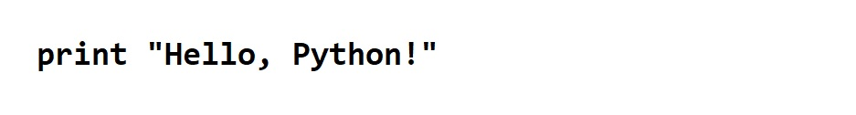

- Python is a high-level, interpreted, interactive and object-oriented scripting language. Python is designed to be highly readable. It uses English keywords frequently where as other languages use punctuation, and it has fewer syntactical constructions than other languages.
- Python is Interpreted: Python is processed at runtime by the interpreter. You do not need to compile your program before executing it. This is similar to PERL and PHP.
- Python is Interactive: You can actually sit at a Python prompt and interact with the interpreter directly to write your programs.
- Python is Object-Oriented: Python supports Object-Oriented style or technique of programming that encapsulates code within objects.
- Python is a Beginner's Language: Python is a great language for the beginner-level programmers and supports the development of a wide range of applications from simple text processing to WWW browsers to games.
What is Python?
Python is a general-purpose interpreted, interactive, object-oriented, and high-level programming language. It was created by Guido van Rossum during 1985- 1990. Like Perl, Python source code is also available under the GNU General Public License (GPL). This tutorial gives enough understanding on Python programming language.
History
Python was developed by Guido van Rossum in the late eighties and early nineties at the National Research Institute for Mathematics and Computer Science in the Netherlands.
Python is derived from many other languages, including ABC, Modula-3, C, C++, Algol-68, SmallTalk, and Unix shell and other scripting languages.
Python is copyrighted. Like Perl, Python source code is now available under the GNU General Public License (GPL).
Python is now maintained by a core development team at the institute, although Guido van Rossum still holds a vital role in directing its progress.
Python is derived from many other languages, including ABC, Modula-3, C, C++, Algol-68, SmallTalk, and Unix shell and other scripting languages.
Python is copyrighted. Like Perl, Python source code is now available under the GNU General Public License (GPL).
Python is now maintained by a core development team at the institute, although Guido van Rossum still holds a vital role in directing its progress.
Python Features
Python's features include −
- Easy-to-learn − Python has few keywords, simple structure, and a clearly defined syntax. This allows the student to pick up the language quickly.
- Easy-to-read − Python code is more clearly defined and visible to the eyes.
- Easy-to-maintain − Python's source code is fairly easy-to-maintain.
- A broad standard library − Python's bulk of the library is very portable and cross-platform compatible on UNIX, Windows, and Macintosh.
- Interactive Mode − Python has support for an interactive mode which allows interactive testing and debugging of snippets of code.
- Portable − Python can run on a wide variety of hardware platforms and has the same interface on all platforms.
- Extendable − You can add low-level modules to the Python interpreter. These modules enable programmers to add to or customize their tools to be more efficient.
- Databases − Python provides interfaces to all major commercial databases.
- GUI Programming − Python supports GUI applications that can be created and ported to many system calls, libraries and windows systems, such as Windows MFC, Macintosh, and the X Window system of Unix.
- Scalable − Python provides a better structure and support for large programs than shell scripting.
- It supports functional and structured programming methods as well as OOP.
- It can be used as a scripting language or can be compiled to byte-code for building large applications.
- It provides very high-level dynamic data types and supports dynamic type checking.
- It supports automatic garbage collection.
- It can be easily integrated with C, C++, COM, ActiveX, CORBA, and Java.
Sample Code
Hello World

Download
Download the latest version for Windows
Looking for Python with a different OS? Python for Windows, Linux/UNIX, Mac OS X, Other
Want to help test development versions of Python? Pre-releases
Looking for Python 2.7? See below for specific releases
Looking for Python with a different OS? Python for Windows, Linux/UNIX, Mac OS X, Other
Want to help test development versions of Python? Pre-releases
Looking for Python 2.7? See below for specific releases
Hello, Python!